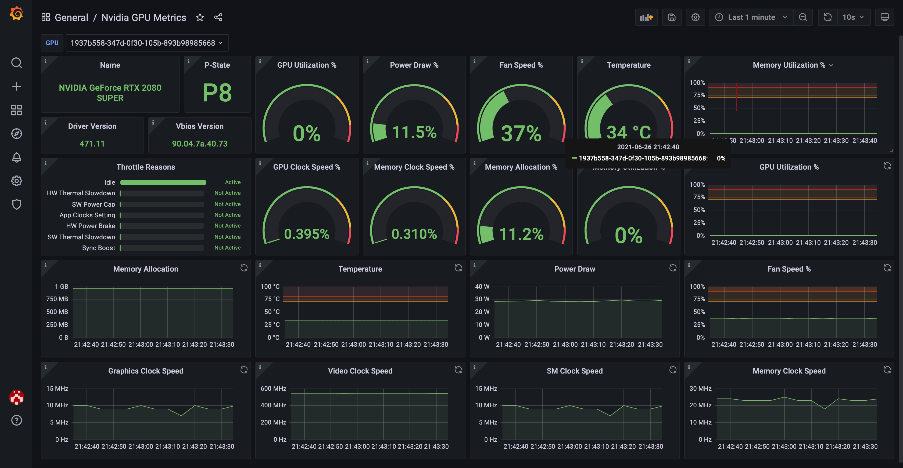
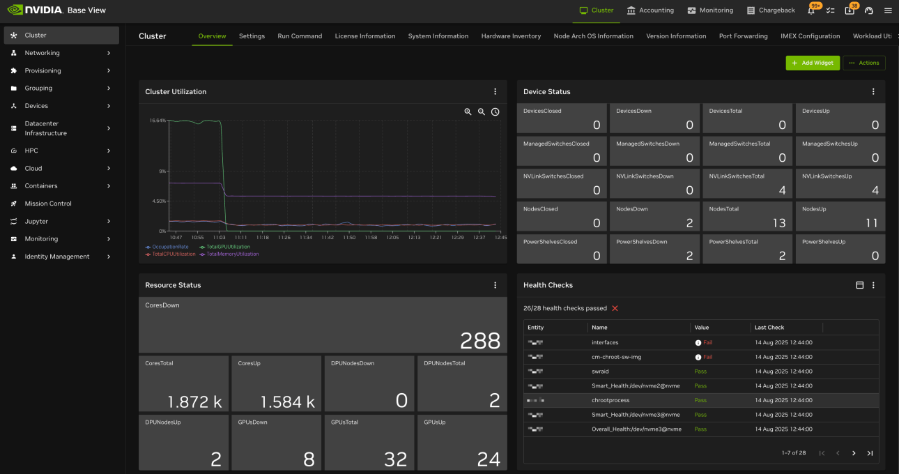
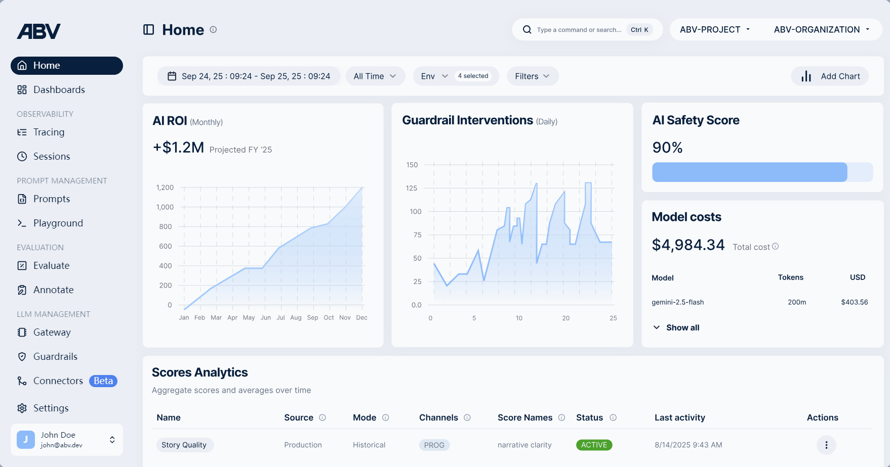
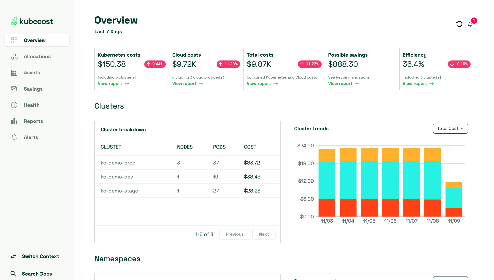

异构算力与大模型观测治理看板调研报告
精选并解析业界在 GPU 切片调度、单卡物理遥测、AI 应用大盘治理和 K8s 云原生 FinOps 成本优化方面的先进看板设计，并结合 docx 文档内的真实大盘截图，沉淀 iPavo 原型的设计启发。
🔮 Run:ai AI集群管理与调度平台看板
NVIDIA MLOps1. 平台核心定位
Run:ai（现属 NVIDIA）是一个企业级 GPU 虚拟化和集群资源调度管理平台，旨在通过动态切片和弹性调度算法，最大化提升企业 GPU 资源的利用率，解决多租户场景下资源分配不均和算力浪费的痛点。
2. 核心功能板块
- 全局概览 (Overview)：实时展示集群健康度与基础负载。包含在线节点/GPU总数、已分配算力、运行与排队任务数，以及已分配但闲置的GPU（Idle Allocated）等核心能效指标。
- 配额与弹性管理 (Quota Management)：支持多租户（项目/团队）配额管理。通过“配额内 (In quota)”与“超配额 (Over quota)”设计，允许团队在集群空闲时超越配额运行任务，并在有高优先任务时由系统自动抢占和收回，实现算力弹性共享。
- 多维度性能监控 (Deep Analytics)：深度集成开源监控标准（如 Grafana），从项目级、集群级提供秒级高精度指标。重点展示 “资源分配率 (Allocation)” 与 “实际利用率 (Utilization)” 的对比趋势（涵盖 GPU 计算、显存、CPU 等），辅助管理员快速定位“占而不用”的资源浪费。
- 任务与资源调度 (Workload & Resource Management)：提供 AI 训练与推理任务的全生命周期管理，底层支持 GPU 动态切片技术 (Fractional GPU)，允许用户以小数级（如 0.5 卡、0.1 卡）细粒度申请和调度 GPU 算力。
3. 总结
该系统是一个极度侧重“技术与运维”的 AI 集群资源调度看板，主要面向 IT 管理员、MLOps 工程师及 AI 团队负责人。其核心功能聚焦于 GPU 细粒度虚拟化切片、多租户弹性配额（支持超额运行与抢占）以及资源效能审计（强对比分配率与实际利用率）。Dashboard 的整体设计旨在通过极致的底层调度与资源监控，帮助企业最大限度压榨 GPU 算力、消除资源闲置，实现 AI 基础设施的降本增效。
📊 Grafana Labs (Nvidia GPU Metrics) 硬件监控看板
GPU Telemetry1. 平台核心定位
该 Dashboard 是一个专注于 GPU 物理硬件级实时性能与健康度监控的专业看板。旨在为系统运维人员和底层开发者提供高频、高精度的单卡（或单节点）物理遥测数据，以诊断底层硬件故障、预防过热风险，并辅助进行底层的算力调优。
2. 核心功能板块
- 基础硬件与驱动信息 (Static Hardware Info)：静态展示当前所选 GPU 的具体型号（如 GeForce RTX 2080 SUPER）、当前能耗状态（P-State，如 P8）、显卡驱动版本以及 Vbios 版本，方便快速核对硬件底座环境。
- 实时运行状态仪表盘 (Real-time Gauges)：以极高的刷新频率，通过直观的圆环图 (Gauge) 展示 GPU 利用率、实时功耗占比、风扇转速、核心温度、显存占用率以及各类时钟频率占比，提供瞬时的性能快照。
- 硬件降频与故障诊断 (Throttle Reasons)：独有的硬件节流 (Throttling) 状态看板。实时监控并反馈 GPU 性能受限的底层原因（如硬件过热 HW Thermal Slowdown、软件限功耗 SW Power Cap 等），是定位“计算节点掉卡”和“因过热导致训练变慢”等硬件故障的关键工具。
- 高精度时序变化趋势 (Historical Trends)：通过细粒度的时序折线图，追踪短期内（如近 1 分钟）GPU 核心温度、风扇转速、功耗 (W)、显存分配 (MB) 以及各类核心时钟频率（如 SM Clock, Video Clock）的波动曲线，用于捕捉突发的硬件异常。
3. 总结
该 Dashboard 是一个极度硬核、面向物理硬件层面的 GPU 实时监控与诊断看板，主要面向 GPU 服务器运维工程师、硬件测试人员以及系统级性能调优开发者。其功能完全侧重于 GPU 的物理健康指标、能耗散热以及底层时钟频率的瞬时监控与诊断。Dashboard 的整体设计旨在提供高透明度的硬件传感器数据，帮助运维人员实时掌握显卡的物理状态，防止硬件受损并快速排查底层算力瓶颈。

⚙️ NVIDIA Base Command Manager (Base View) 集群管理看板
DGX SUPERPOD1. 平台核心定位
NVIDIA Base Command Manager（前身为 Bright Cluster Manager）是一个企业级超大规模 HPC/AI 集群与数据中心基础设施管理平台（常用于 DGX SuperPOD 等顶级算力底座）。其 Dashboard 旨在为系统管理员提供对物理数据中心、算力节点、底层网络及电力辅助设备的一站式、模块化监控与管控看板，保障超大集群的物理稳定与高可用性。
2. 核心功能板块
- 全物理资产状态审计 (Device Status & Resource Status)：极度详尽的底层资产监控。不仅涵盖常规的 CPU 核心、GPU 卡状态（直观展示 Up/Down/Total 数量），还深度监控 DPU 节点、NVLink 交换机、网络交换机、乃至电源机架 (Power Shelves) 等数据中心关键辅助设备，实现全物理拓扑的状态覆盖。
- 集群综合水位监测 (Cluster Utilization)：以时序趋势图形式呈现集群的整体资源开销。将“节点占有率 (Occupation Rate)”与 GPU、CPU、内存的整体利用率在同一时间轴上进行强对比，辅助判断集群负载分布与闲忙度。
- 自动化健康检查与故障定位 (Health Checks)：内置全自动的集群硬件巡检机制。在看板中直接展示健康检查通过率，并以明细表形式指出具体实体（如网卡接口、NVMe 固态硬盘 SMART 信息、软件镜像状态等）的 Fail 异常，实现物理故障的秒级定位。
- 模块化定制与控制集成 (Customizable & Control Tabs)：Dashboard 采用卡片式设计，支持自由添加小组件 (Add Widget)。顶层高度集成了系统设置、Run Command (集群远程指令下发)、端口转发等控制功能，并无缝对接 Accounting (算力计量核算) 与 Chargeback (费用分摊回刷) 等运营财务板块，打通了“监控-控制-运营”的闭环。
3. 总结
该 Dashboard 是一个极度侧重“数据中心物理集群与网络运维”的超大规模算力基础设施看板，主要面向 数据中心运维专家、超算集群系统管理员 (HPC/AI Admin) 以及基础设施架构师。其功能完全侧重于 海量物理设备状态监控、网络与电力拓扑健康度检测、以及底层系统级指令管控。Dashboard 的整体设计旨在化繁为简，将极其复杂的硬件拓扑和海量设备状态精简为模块化指标，帮助运维人员以最直观的方式保障超大规模 AI 算力集群的物理稳定、网络畅通与高可用运转。

🛡️ ABV AI应用观测与治理平台
LLMOps Governance1. 平台核心定位
ABV 是一个企业级 LLMOps (大语言模型运维) 与 AI 治理及效果评估平台。其 Dashboard 致力于将生成式 AI 应用 (LLM App) 的黑盒运行状态转化为业务和安全维度的可视指标。它重点围绕 “AI 业务投入产出比 (ROI)”、“AI 安全与合规 (Safety & Guardrails)” 以及 “LLM 成本控制与质量评估 (LLM Cost & Evaluation)” 展开，帮助企业在落地大模型应用时做到成本可控、内容安全、效果可度量。
2. 核心功能板块
- 商业价值与成本核算 (AI ROI & Model Costs)：直接从业务视角展示 AI 价值。提供 “AI ROI (投资回报率)”月度预测，直观量化 AI 带来的商业收益；同时提供 “模型成本细分 (Model Costs)”，以表格形式清晰罗列不同模型（如 gemini-2.5-flash）、Token 消耗量和美元开销，辅助企业进行精细化算力成本管控。
- 安全防御与护栏拦截 (AI Safety & Guardrail Interventions)：聚焦于生成式 AI 的合规与安全治理。提供 “AI Safety Score (安全得分，如 90%)” 和 “Guardrail Interventions (每日护栏拦截次数)” 趋势图，实时量化大模型在防幻觉、防敏感词、防恶意注入等方面的拦截表现。
- 模型效果与质量评分 (Scores Analytics)：提供多维度的大模型输出质量跟踪。支持对特定任务（如 Story Quality）在生产环境中进行自动化评估，监测具体评估指标（如叙事清晰度 narrative clarity）的活跃状态与最近活动，实现大模型输出质量的长期追溯。
- 全链路 LLMOps 导航 (Sidebar Navigation)：左侧展示了极具系统性的 LLM 应用管理链路，包含 Tracing（调用链路）、Prompts（提示词版本管理）、Playground（沙盒）、Gateway（网关路由）以及 Guardrails（安全护栏策略）等板块。
3. 总结
该 Dashboard 是一个极度侧重“AI 业务价值、内容安全与应用级 LLMOps 运维”的上层软件级监控看板，主要面向 AI 业务负责人、大模型产品经理 (AI PM)、MLOps 工程师以及安全合规官。其功能高度聚焦于 LLM 应用的商业 ROI、Token 消耗成本、安全拦截策略以及模型制造质量评估，完全脱离了底层的 GPU 物理硬件概念。Dashboard 的整体设计旨在打破生成式 AI 的黑盒，帮助企业在大规模上线大模型应用时，提供成本精细化管理、内容安全强护栏、以及大模型效果可量化的全方位保障。

💎 KubeCost 容器云财务与成本管理平台
FinOps Accounting1. 平台核心定位
KubeCost 是一个专注于 Kubernetes (K8s) 容器集群的云财务运营与成本管理平台 (FinOps)。其 Dashboard 旨在为企业建立 K8s 容器资源与底层云账单之间的精准映射，帮助企业计量多云/混合云环境下的容器资源开销，量化算力使用效率，实现容器基础设施的精细化降本增效。
2. 核心功能板块
- 全口径云与容器成本核算 (Unified Cost Overview)：提供直观的费用汇总指标。看板顶部将 K8s 容器内开销、外部云服务商开销 (Cloud Costs，如外部数据库、存储等) 以及“合并总成本”进行并排对比，支持多集群与多云厂商账单的宏观掌控。
- 资源效率与降本预测 (Efficiency & Savings Tracker)：引入 “Possible Savings (潜在可节省金额)” 和 “Efficiency (算力使用效率，如 36.4%)” 指标，帮助企业快速诊断“资源超配 (Over-provisioning)”情况，直观评估当前集群资源的性价配比，并一键跳转至具体降本建议。
- 集群级费用细分与趋势 (Cluster Breakdown & Trends)：按集群维度进行拆解。通过明细表列出各集群（如 kc-demo-prod/dev/stage）的节点数、Pod 数量以及所花费用；同时配合时序堆叠柱状图，直观展示过去一周每日总费用的波动趋势和各集群费用占比。
- 精细化容器分账导航 (FinOps Navigation)：左侧导航栏反映了深度分账与成本优化的能力，包含 Allocations（按命名空间/Namespace、Label 费用分摊）、Assets（追踪 CPU/GPU 等物理资产费用消耗）以及 Savings（闲置规格优化）等板块。
3. 总结
该 Dashboard 是一个极度侧重“IT 财务、云算力运营与 K8s 成本优化”的容器 FinOps 监控看板，主要面向 云财务主管 (FinOps Practitioner)、IT 运营总监、基础设施管理员以及 MLOps 负责人。其功能完全围绕 云账单可视化、K8s 容器多维度分账审计、闲置资源识别以及算力性价比量化 展开，脱离了硬件底层的物理参数监控。Dashboard 的整体设计旨在消除容器集群的“账单黑洞”，帮助企业以最直观的方式看清每一分算力（包括承载 AI 任务的 K8s 节点）花在哪个业务/命名空间，实现云基础设施的成本透明化与合理化。

📊 调研方案多维度评测矩阵明细表
| 调研评测平台 | 动态切片细粒度 | 弹性调度抢占 | 时钟温度功耗 | Throttling 降频 | LLM API 安全与ROI | Namespace 分账 |
|---|---|---|---|---|---|---|
| 🔮 Run:ai Platform | 9 极佳 (动态切卡) | 9 极佳 (抢占机制) | 5 一般 (基本监测) | 3 弱 (暂无自检) | 5 适中 (作业计量) | 5 适中 (资源审计) |
| 📊 Grafana GPU Metrics | 3 无 (仅展示) | 3 无 (无排队抢占) | 9 极致 (传感器级) | 9 极佳 (硬件限频) | 3 无 (不涉及业务) | 3 无 (无账单拆解) |
| ⚙️ Base Command Manager | 7 良好 (官方支持) | 7 良好 (基本调度) | 7 良好 (交换机电力) | 7 良好 (健康自检) | 5 适中 (硬件级结算) | 5 适中 (裸机账单) |
| 🛡️ ABV LLMOps Board | 3 无 (纯应用层) | 3 无 (无调度抢占) | 3 无 (脱离硬件) | 3 无 (无硬件报错) | 9 极佳 (安全护栏) | 7 良好 (Token控制) |
| 💎 KubeCost Board | 3 无 (仅K8s配额) | 5 适中 (资源规格优化) | 3 弱 (仅记录硬件) | 3 弱 (无诊断反馈) | 7 良好 (闲置省钱预警) | 9 极佳 (项目多维度) |
通过对上述五个主流平台的深挖，我们得出了异构算力观测治理的核心规律：传统运维只注重硬件“物理死活”（如 Grafana），而AI业务与财务则死守“成本性价比”与“数据安全合规”（如 KubeCost、ABV），Run:ai 则是连接两者的调度桥梁。
在当前的 iPavo 原型规划中，我们突破性地将 “物理四维监控”（Grafana/BCM 灵感）、“AI 智能运维 ROI 与网关护栏”（ABV 灵感） 以及 “多集群多维度 FinOps 分账”（KubeCost 灵感） 在单一仪表盘中并轨联展。这一全栈视角的深度融合极好地兼顾了“MLOps 技术效能”与“财务及业务运营 ROI”，打破了过去观测黑盒的壁垒，构成了 iPavo 原型在政企大客户及多部门联合汇报场景下的核心降本增效护城河！